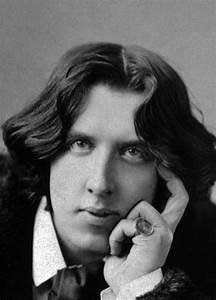
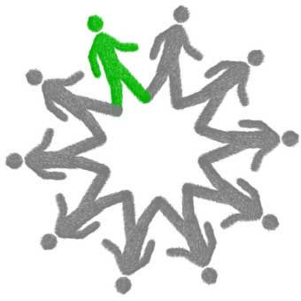

Diana, I fear the light
Written 1972

I fear the darkness with its hidden panels of illusions and myths.
But I also love the darkness;
I find my time to break down and imagine.
The practical of the day becomes the peculiar of the night.
Everything takes on a new cover.
My mirror becomes hidden words.
My eyes become magnets of shadows and every noise becomes cries of those shadows.
I surround myself in darkness and throw away the adulthood of too much knowledge.
I laugh and dance and sing in unreal and play hide and seek with reality.
In my games, I wonder, what is real?
Do our eyes tell us lies of make-believe in the too much brightness of day?
Do we see the realness of the word when darkness comes to rest our eyes from the light?
Or are we completely fooled by day and night and we are our own illusions?
I fear the darkness and I fear my love for it.
But I would not give it up.
I find my laughter and my life in these empty spaces of time.
See More
Man
Written in 1973

Colors;
clear and translucent
he can see and be seen
yet he hides and is blind.
Colors;
one color
solid with a purpose
but a blend of pastels
he cannot decide.
Colors;
black and deep
he is filled with sorrow
but he is framed in white
he does have hope.
Colors;
red with fire
he fights for his beliefs
but he is dyed in green
He wants to grow and learn.
Colors;
yellow like the sun
he has ideals of perfection
but his body is pale
he is only a man.
See More
Friendship
Written in 1988
I lost something along this way,
Will you help me find it?
I will describe it to you if you listen.
It cannot fit in a small box.
It cannot be bought or sold.
It cannot be misused or left out in the cold.
But I told you what it was not, let me tell you what it was.
It was precious to me, more than anything I possessed.
It made me laugh, cry, feel and believe again in fairy tales.
It is worth my soul, my life, my happiness.
Now that I am telling you what it was, I remember where I left it.
I did not misplace it or lose it.
I gave it back.
It was too valuable to keep.
I might have lost it.
See More
Sounds
Written in 1973
The sounds have become thicker and less able to bear speech.
Have they gone or has my hearing become attune to them?
Sounding the word yet not hearing it.
Laughter is the key to the sounds.
Calling always calling like a mad man screaming in the night.
Far off distance sounds.
Like the whisper of the wind constantly vibrating, inside, outside around.
Swirls of merriment harass the sounds.
Taunt the silence in the crowd.
Being silent when all is still, yet is the sound, hiding in its own silence.
Hush
Hear the sound
and you will hear nothing.
For silence is the sound and sweetest of all sounds is this.
See More
Wilde
Written in 1972

The wind whispered to the trees, “listen, I have traveled far, seen many a land and I know what is real.”
The tree not to be outdone boasted, “It is to give without taking; in
nature all which give certainly must be real.”
The flowers filled the air with sweet aromas, “Can you not sense our realness with your noses? Your
senses tell you we are real.”
The nightingale with sadden eyes cried in his sorrow and lifted his voice to speak.
“I have seen the world twice, lifted my cup with the noblest of men and, loved with the loveliest of nature.
In all this, I did not sense I was real.
Finding your real self takes more than experience, sharing, words, or laughter. It takes hard
bitter times and the weeping of tears.
It took the trapping of a star and the caging of a man for me to know what is real.
In my youth, I have done almost everything and now I know love is real.
When you deny love was once inside you, you deny the realness of your soul.”
Then the nightingale shivered in the cold, gave one last moan, and died.
See More
Cave of Reason
Written in 1974
So many times we try to see through the dark cave of reason only to throw our torches down to the ground when
we see too clearly.
We need true so desperately.
We demand and require it.
But when it stares us in the face we turn and run like frighten children, fleeing from an imaginary
demon.
In the morning we will cry, where is the truth?
We have searched but do not find it.
Is the truth never before our eyes?
Are the fantasies of kings and queens and promise lands blinding us from it?
When it stands naked before the sun.
See More
Different
Written in 1973

You walk across my life and I smile.
We are friends you and I, yet how different we two.
You are beautiful.
I am ugly.
You give warmth.
I give the cold.
You laugh.
I cry.
You smile.
I frown.
You bring peace to my soul.
I bring nothing to you.
Yet I claim to love you and you claim you do not love.
How different we two.
See More